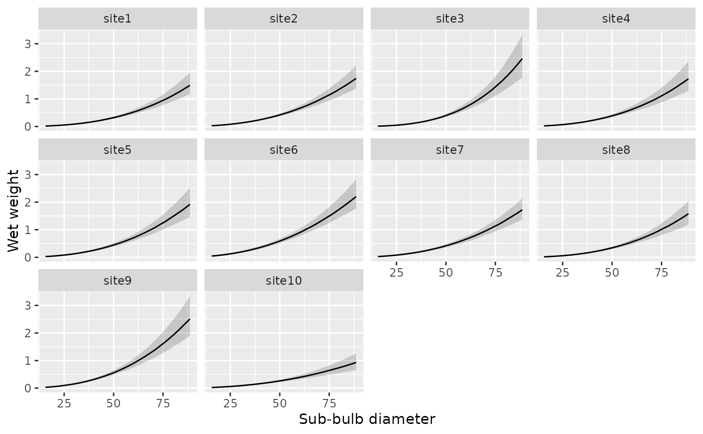
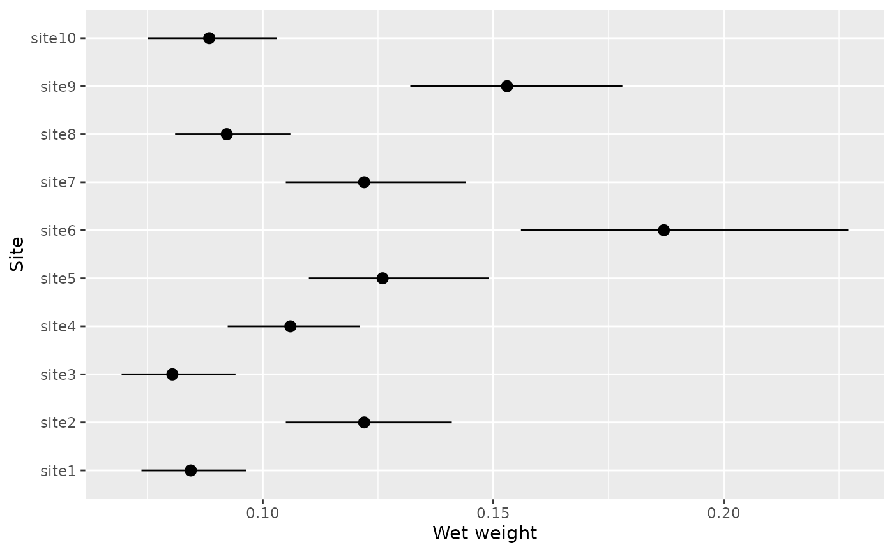

Render a ggplot from a kb_predictions object (the output of a
kb_predict_*() function).
Arguments
- predictions
A
kb_predictionsobject.- ...
Unused.
- x
A string naming the x-axis column, or
NULLto infer it from the metadata.- observed
A data frame of raw observations to overlay as points, or
NULLfor none.- max_facets
A whole number capping the facet panels drawn; if the grouping has more groups, the first
max_facetsare shown with a warning. UseInfto disable.
Details
Called with just the predictions, the plot configures itself: the x-axis,
faceting, and geometry are inferred from the prediction's metadata. The result
is a standard ggplot that can be refined with + (scales, labels, themes,
coord_flip()).
The geometry is chosen automatically, not set by an argument: a line with a
compatibility-interval ribbon for a generated curve (kb_predict_weight_by()
over a varying predictor), and geom_pointrange otherwise. Override the
inferred x-axis with x, and overlay the raw data with observed.
See also
Other prediction:
autoplot.kb_predictions(),
kb_predict_weight(),
kb_predict_weight_by()
Examples
# Allometric curve by site (ribbon):
kb_predict_weight_by(fit_weight_sim_nereo, by = "site") |>
kb_plot_predictions()

# Weight at a reference diameter by site (pointrange, sites on the y-axis):
kb_predict_weight_by(
fit_weight_sim_nereo,
by = "site", diameter = 30, new_levels = "average"
) |>
kb_plot_predictions() +
ggplot2::coord_flip()
